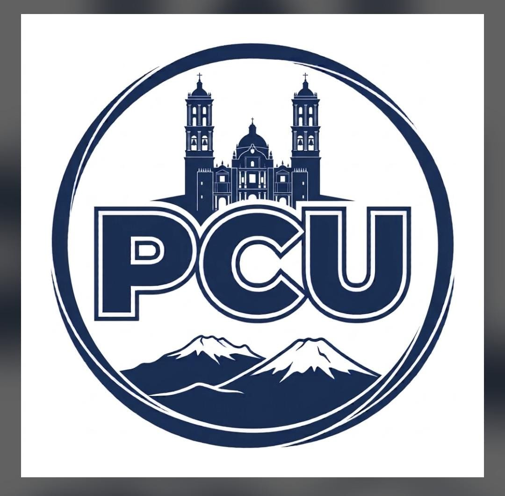

🎯
Nuestra misión
Trabajar unidos con la ciudadanía, promoviendo la honestidad, la transparencia y la participación ciudadana para construir soluciones reales que mejoren la calidad de vida de las y los habitantes de Puebla capital.
Una propuesta de participación, responsabilidad y trabajo cercano para construir una Puebla capital más segura, justa, incluyente y próspera.
Conoce al candidato Ver propuestas
El Partido Ciudadanos Unidos nace del deseo genuino y la determinación de jóvenes que buscan un cambio verdadero, sobre todo que los discursos se conviertan en hechos. Cansados de ver la política tradicional alejarse de las necesidades reales de nuestras familias, decidimos pasar de la queja a la acción. Ciudadanos Unidos no es solo un partido político; es un movimiento ciudadano con rostro joven, fresco y libre de viejos vicios. Creemos que el verdadero cambio para Puebla no vendrá de las mismas fórmulas del pasado, sino de la energía, la innovación y la participación activa de quienes habitamos este estado día con día.
Unidad y progreso ciudadano.
Trabajar unidos con la ciudadanía, promoviendo la honestidad, la transparencia y la participación ciudadana para construir soluciones reales que mejoren la calidad de vida de las y los habitantes de Puebla capital.
Ser un partido comprometido con una Puebla capital más segura, justa, incluyente y próspera, donde la unidad ciudadana impulse oportunidades y una mejor calidad de vida para todas y todos.
Seis áreas de trabajo propuestas para orientar el proyecto.
Prevención del delito, atención a víctimas y seguimiento a reportes.
Bacheo, limpieza, parques, alumbrado y atención a reportes.
Capacitación, espacios juveniles y vinculación para el primer empleo.
Orientación para negocios, emprendimiento y comercio local.
Información pública accesible, evaluación y rendición de cuentas.
Reforestación, reciclaje, cuidado del agua y movilidad sustentable.